From a free-plan limitation to a public web app: how I built a project dashboard on top of ClickUp using AI, and what I learned along the way
Lucas B · September 2026 · LinkedIn ↗
App: https://dashboard-clickup.vercel.app
Code: https://github.com/lucanscb/dashboard-clickup
All the data shown in this article is fictional, created purely for the public demo.
The point of this document is to explain how this little project was born, how it grew, and why it’s here in public for you to look at. It’s documentation about the ClickUp Project Tracker. It pulls together the story of the project and the technical and product decisions described during the first documentation session. It’s deliberately broad, and it keeps the context, the motivations, the ideas, the experiments, the iterations and the implementation direction described so far.
This is not meant to be the final technical spec yet. Several areas should be expanded later, especially the more technical ones.
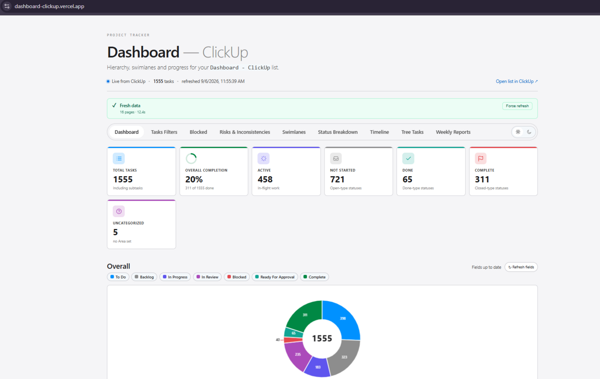
Open the Dashboard tab ↗The ClickUp Project Tracker was built out of an earlier project, one I created for a volunteer initiative I’m part of. That volunteer project is building an app and uses ClickUp to record and manage the work across several areas, including Development, Design, Project Management and other functions. Tasks and subtasks are recorded in ClickUp and used as the operational source of the Dashboard project’s information.
Since the volunteer initiative has no budget to pay for a ClickUp plan, it runs on the free version. In my opinion the free version is already very good and very useful, especially for small projects (I’d maybe even say medium ones), but it limits several advanced dashboard, reporting, export and automation capabilities (on the Free version, of course).
So the practical need was to create an external way to pull and visualise the ClickUp data and produce useful reports on a daily, weekly or monthly basis. The goal was to see the state of the project visually: how many tasks existed, how they were spread across area and priority, how many were missing important information, which ones were overdue, which ones were blocked, and other project-management indicators. All of it dynamic, with different setups.
So I started having the idea of building a panel with dashboards for the volunteer project, and it turned into a genuinely useful and interesting solution. Today we use that panel in the volunteer initiative for real, and it helps us control, manage and organise the project as a whole.
The thing is, that application is private and the project hasn’t launched yet. All through building the panel I had to keep access control in mind: only the volunteer members authorised by the project can get in (and honestly, that access part was a fun one to implement — I’ll say more about it later, I promise). But in order to write this up for you and demonstrate the concept publicly, I decided to build a separate project that mirrors the ideas and functions of the solution I created for the volunteer initiative, without exposing the original project and without the access control.
So I created a brand-new ClickUp account and workspace specifically for the public demo project (all the data is fictional, purely for demonstration). The public version is essentially a demonstrative replica of the concepts, functions and ideas implemented in the volunteer project, running in a separate ClickUp environment.
A quick word about ClickUp: it’s a work-management platform that organises projects through tasks, subtasks, statuses, priorities, assignees, dates and custom fields. The structure follows a clear hierarchy: Workspace, Space, Folder, List, and inside the List, the tasks and subtasks. That organisation matters for this article, because the List is where the tracker pulls its data from.
On top of each List you can apply different views: list, board (kanban), calendar, table and Gantt. Dashboards are a separate layer that aggregates data from several sources into tracking cards. That’s exactly the layer this project rebuilds outside the tool.
The platform ships native fields like Assignee, Priority and Due Date, and lets you create custom fields with a decent variety of types. There are also fields that use AI to fill themselves in, but a heads-up: ClickUp’s AI layer, Brain, is sold as a separate add-on, charged per user and on top of whatever plan you’re paying for. It’s not included even in the paid plans — and remember, we’re on the free version.
Even so, the free plan gives you a lot. Unlimited tasks and members, docs, dashboards and automations, with ceilings: 5 active automations and 100 actions per month, plus a low storage limit. It’s perfectly usable for a personal project or a small team (and no, I’m not sponsored by them, folks (: ).
I was already using ClickUp for personal projects, from household bills to articles I want to write — it’s pretty great. For the ClickUp Project Tracker I created a separate private workspace. The reason is practical and worth passing on as a tip: on the free plan, every member has full access to the workspace, with no way to restrict someone to read-only. If you need to isolate a project, a separate workspace is the way.
With more than ten years implementing software and managing projects, including a good stretch in Jira and other big platforms like it, my read is that ClickUp delivers more features per dollar than any direct competitor, and pays for that in two currencies: a long learning curve, and performance that wobbles as your data volume grows. In a large environment, with tens of thousands of items, more specialised tools still win on stability. For small and medium projects, I consider ClickUp a very strong option.
I tried the entry-level paid plan for about a month to understand what changes. The most meaningful gain was automation: changing statuses, notifying users, firing e-mails and posting messages into communication channels, with the ceiling going from 100 to 1,000 actions per month. If you want to automate for real, that’s the first step that actually makes a difference. (custom fields also go to another level on the paid version)
I won’t go on much longer here, because that’s not the point of this article. I talk about ClickUp because the dashboard is born from it: the project is a tracker that pulls data from the tasks and projects recorded in the tool. I’ll go deeper into the platform in another article. But I’ll say this much: if you’re looking for a tool to keep your tasks under control, ClickUp is worth a look.
The original volunteer project already had a large amount of real data, because it’s been running for more than a year. The dashboard I built for the volunteer initiative consumes a long list of tasks and subtasks that already exist.
The public demo project, on the other hand, started from an empty ClickUp workspace. To have data available for development and testing, some tasks were created by hand at the beginning. And let me tell you, creating tasks and subtasks by hand is a serious drag (use an AI to help you).
Which is exactly what I did: during that development process I ‘invented’ a method to generate more than a thousand tasks and subtasks straight into ClickUp, automatically, using artificial intelligence. If you want to know how I did it, the technical walkthrough is in Appendix A, at the end of the article. If you’d rather go straight to the dashboard itself, just keep reading: the important thing is knowing that those thousand-plus fictional tasks and subtasks were not created one by one by me (it’d be pretty impressive if they were, right?).
The point of creating that big data set was to make the public demo more realistic and to let the dashboard be tested against a large enough volume of tasks, statuses, areas, priorities and other combinations.
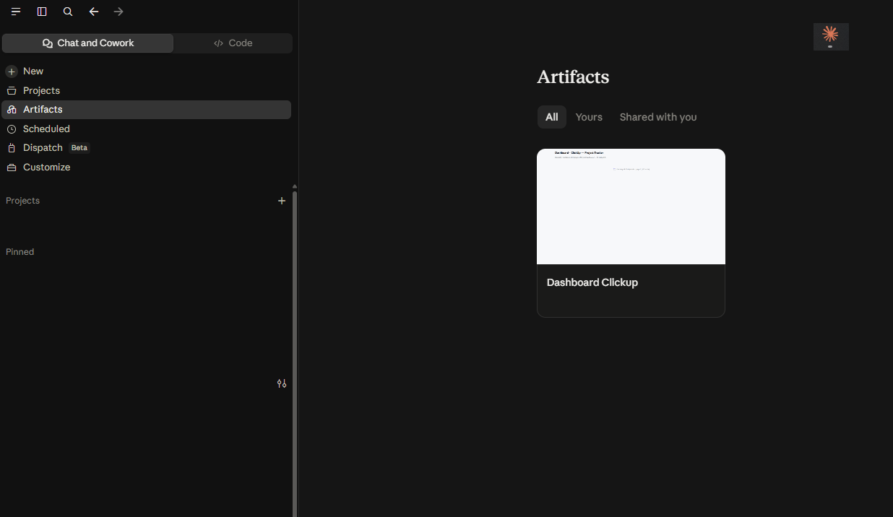
Click to enlargeLet me explain this bit too, because it matters: the concept of the dashboard came from my previous experience — my career in software implementation, technology, quality assurance, project management and project-control tools. The initial ideas were not generated exclusively by AI. AI helped me a lot in the building, but the idea and the dynamics came from me, from hands-on experience in the field. I say that because sometimes you can get the impression that you just ask the AI and it goes off and does everything (sometimes that’s exactly what happens, come to think of it o.O), but in this case I put a lot of work into imagining and building it the way I wanted.
At the same time, I made the most of AI tools throughout the whole process, especially Claude/Anthropic’s Artifacts capability. I’d already seen examples of Artifacts online and got interested, because I could see the possibility of creating prototypes and interactive applications through natural-language instructions. Without much technical knowledge you can build something really good: an app, a site, interactive documents. Pretty cool. (And no, I’m not sponsored by Anthropic either, folks)
With that in mind, I used the Artifact environment as my prototyping and development space. That tool is fantastic: it creates an HTML interface that behaves like an application, with interaction, dynamic behaviour, visual components, dashboards, charts and a bunch of other neat things. That gives you something very rich as a starting point — not a commercial production application right out of the gate (easy there, kid, don’t get carried away), but the chance to validate an idea, test a concept, refine requirements and see how the application could work. That’s awesome!
Developers, don’t read this part… but obviously all of this, in the Artifact, happens in the form of vibe coding (I’ll say a bit about that). Even though I come from a technical background and have done plenty of programming in my life, I haven’t worked as a front-line programmer in a long time. I use that earlier technical experience to communicate requirements and business rules to the AI tools. And that’s incredibly valuable, believe me! Not trying to sound full of myself here — but sounding full of myself anyway.
What I mean is that I consider this style of vibe coding — with Claude’s Artifact, Google’s Antigravity, Amjad Masad’s Replit, among several others — perfectly valid and interesting precisely for prototyping. Using AI, for me, is very useful, for technical and non-technical people alike. So anyone with an idea for an app, a site, a process or a business can see their idea come off the page; or even people who already have a business and need a solution for a pain point can shape it and see what works best to close those gaps. Obviously (in my opinion) that person will then need help turning the idea into something concrete (or not, right, it depends). But I’ll say it again: interacting in natural language makes it possible to prototype and validate an idea before committing to a traditional development process. (I warned you, developer, not to read this.)
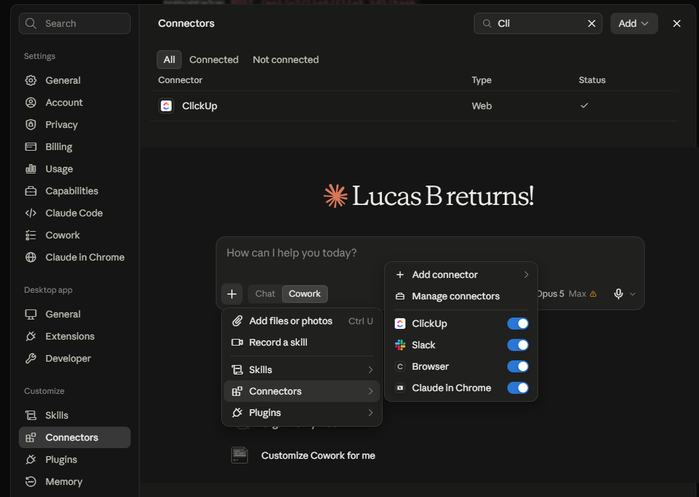
Click to enlargeMy first Artifact was born as an exercise, just to understand how the technology worked. It was while playing with it that I saw the path: I could hook it up to ClickUp and turn the exercise into a tool. Hang on, keep reading, this part is where the project turns.
First, a distinction that’s worth its weight in gold if you want to reproduce this. There are two different paths for ClickUp to talk to Claude, and mixing them up is expensive:
The first one is the MCP connector. You authenticate through Claude, and Claude can then read your workspace during the conversation. It’s good for exploring, testing and prototyping. ClickUp maintains an official MCP server, in public beta, with around 40 tools covering search, tasks, time tracking, chat and docs. Authentication is via OAuth, with no personal-token option.
The second is the REST API, which is what holds up a dashboard that actually runs (in this context, at least). Versioned endpoints, token authentication, and access to things MCP doesn’t expose yet, like Goals, webhooks and creating custom fields.
The difference that decides the project is in the limits. MCP today works on a daily ceiling: 50 calls per 24 hours on the free plan and 300 from Unlimited up, without the AI add-on. The REST API works on a per-minute ceiling: 100 requests per token on Free, Unlimited and Business, going up with the plan. A dashboard that reloads data on every visit burns through MCP’s daily ceiling in the blink of an eye.
How you connect the connector. Open the connector settings in Claude, authenticate with ClickUp, pick the workspace and authorise access. All through the interface, no code. One important detail: that authorisation is yours, tied to your account. It doesn’t travel with the Artifact. If you share the dashboard with someone, that person needs their own connection and their own permissions in the workspace.
Validation came before building. That’s a habit you pick up from implementing systems, and it’s the part I’d most recommend copying. Before asking for a single line of dashboard, I ran two deliberately silly tests. First, I asked the AI to count how many tasks and subtasks existed in the project. It came back with 25, which was exactly what I had. Second, I asked it to list the custom fields and attributes available in the returned data.
They look like trivial tests, and they are. That’s the point. They answer two questions that define everything else: is the connection alive, and what exactly can it see. Anyone who skips that step and jumps straight to the full dashboard spends hours debugging an empty screen without knowing whether the problem is in the code, in the permissions or in the shape of the data. I’ve seen that movie too many times in ERP implementations to want to watch it again.
With the integration validated and the data format mapped, the next question was how to turn those records into a dashboard. The project moved out of integration validation and into design and implementation.
To explain how I built all of this, I also need to talk about my method. It might be more common among AI users than I think, but I’ll tell it anyway.
An important part of the method was separating ideation from execution. I often have a lot of ideas at the same time, with branches and related possibilities, and sometimes I even struggle to string them all together into an organised technical spec. The opposite situation happens too (I imagine): someone can have an idea but struggle to expand it with enough detail.
And I reckon that, for both cases, you can do what I do and use several AIs and tools to help you: I use one AI mainly to organise and shape the ideas, and another as the execution environment for the application. Let me explain better:
Instead of spending precious Claude/Artifact context and credits on brainstorming and organising my ideas, I open a separate conversation in ChatGPT, or in another AI tool, specifically to build the prompts. Gemini, Manus, Kimi or whichever AI you prefer can be used in that middle step. I use ChatGPT often because I find it particularly good at organising ideas and writing prompts. Mostly because I really like the voice format: ChatGPT Voice lets me explain an idea naturally, in my own words, my own way. Like, I’m out for a walk and an idea shows up — instead of typing out a technical spec (by which point I’ve forgotten the idea), I use voice, say everything I need to say, and ChatGPT organises it for me, putting together a prompt, researching and helping me study the subject further.
That said, I can tell you that I wrote my requirements in a natural way and the AI helped me turn them into more technical prompts.
That technical, structured prompt then gets copied into Claude Code / Artifact, where it becomes an execution instruction.
This approach has several benefits: it keeps the Artifact conversation as a cleaner, execution-oriented space, it cuts down unnecessary Claude credit usage during brainstorming, it reduces the chances of the AI hallucinating (in my opinion and experience), it lets you explore ideas without immediately modifying the application, and it converts informal business and project-management knowledge into structured technical instructions. (Okay, I know, I know… Claude Code, like plenty of other AIs, has a plan-first mode. But I like doing it this way because I think it’s better and because it brings the benefits I listed above.)
Also note that AI learns your style over time. So the quality and structure of your prompts improve as the flow gets refined. Different users may need to teach their AI assistant how they prefer requirements to be organised. (My AIs are pretty well trained by now — they’re my smart friends.)
The first big prompt was based on the natural-language description I wrote of the dashboard I wanted. It included requirements like pulling all the task information from ClickUp, presenting information by area, presenting information by priority, identifying blockers, splitting blockers by area, feature and priority, showing task information in dedicated sections, and making task names clickable so the user could open the corresponding task in ClickUp.
I also described that I wanted additional project-management views and concepts, like Risk & Constraints, swimlane-style views, status-related information and other reporting modules. The prompt grew until it became one large technical instruction that could be handed straight to the Artifact.
The first version of the Artifact was already surprisingly good, but it had details that didn’t match the behaviour or the visual presentation I wanted. Those differences became the basis for the next iteration.
The development process became iterative, then: I explain my idea and what I want to an AI (in my case, ChatGPT or Manus), which then creates the prompt; with that prompt I generate or modify the Artifact, review the result, identify changes, go back to the prompt-building AI, put together a new prompt and send the refined instruction back to Claude/Artifact, following that loop until I hit the goal.
As the Artifact evolved, the dashboard was split into dedicated modules and tabs. The goal was to make the large amount of information easier to navigate.
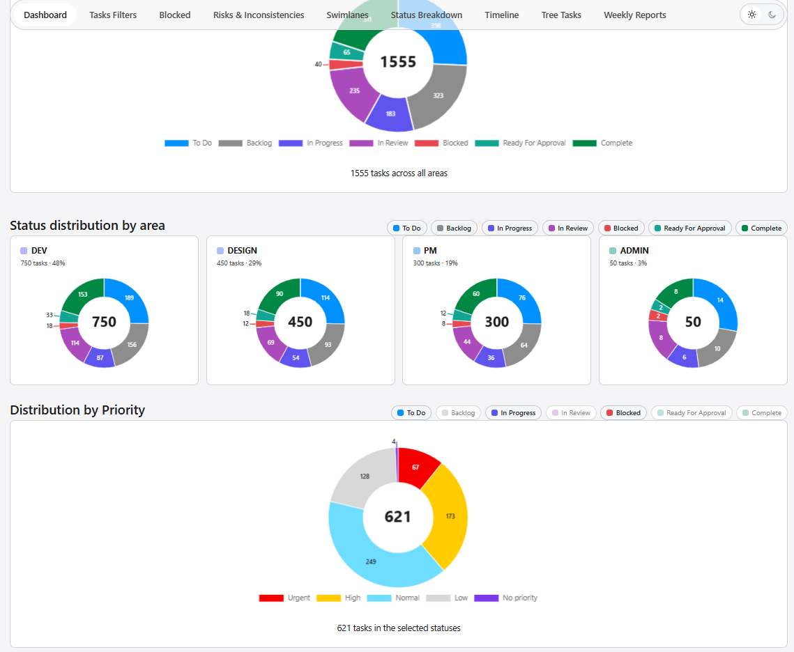
Open the Dashboard tab ↗Task Filters became an important operational view. It shows task statuses and lets you filter by Assignee, Status, Area and task name. Tasks appear in a list structure where the status groups can be collapsed or expanded.
The dashboard also gained quick-filter options for common states, like Blockers, Overdue, In Progress and Complete.
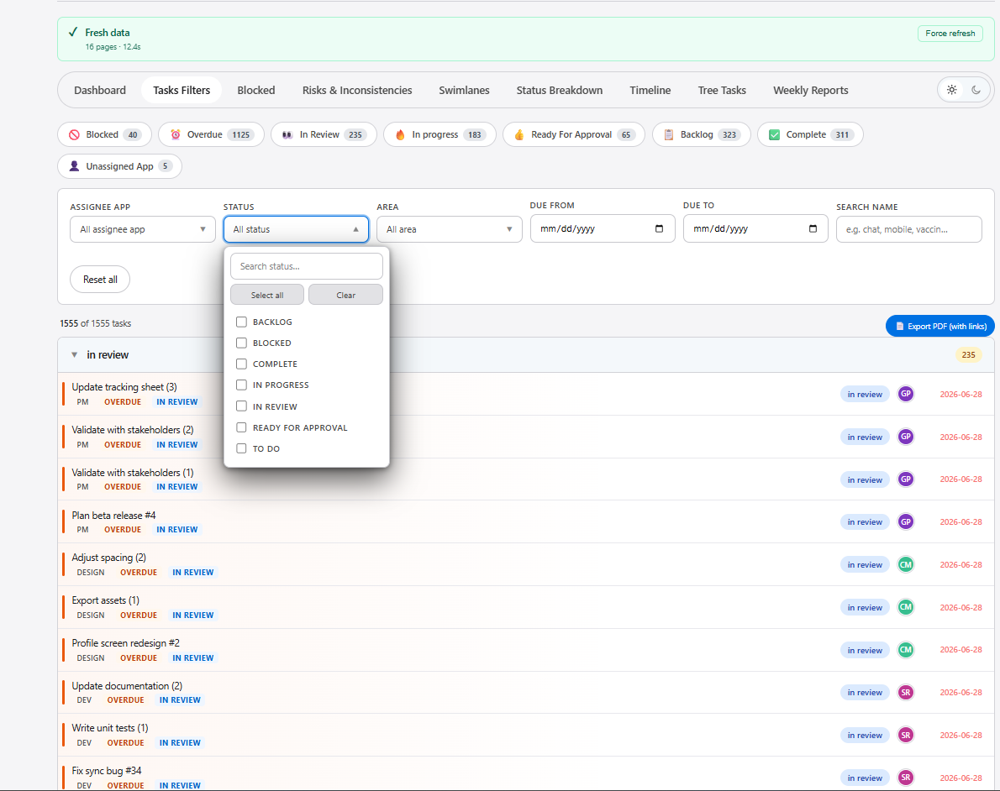
Open the Tasks Filters tab ↗I added a PDF export so the filtered information could be taken outside the application. The exported report keeps the hyperlinks to the ClickUp tasks, letting the reader jump from the report straight to the source task.
Inside the Blockers module, I used additional prompts to refine the visual presentation and make the screen more useful and better finished.
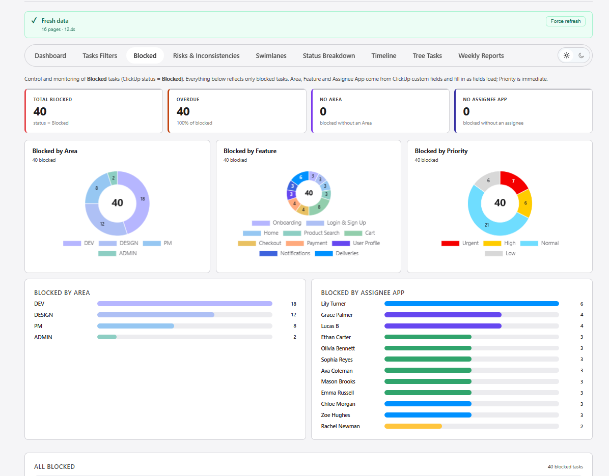
Open the Blocked tab ↗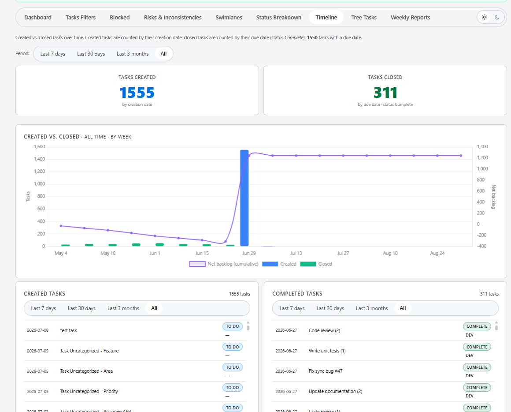
Open the Timeline tab ↗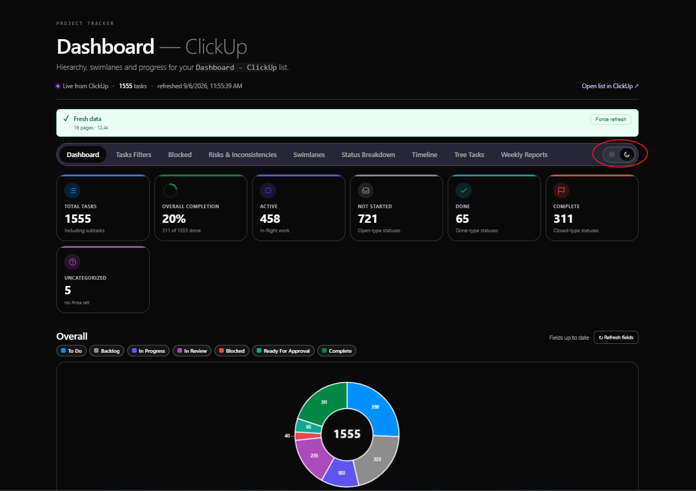
Open the Dashboard tab ↗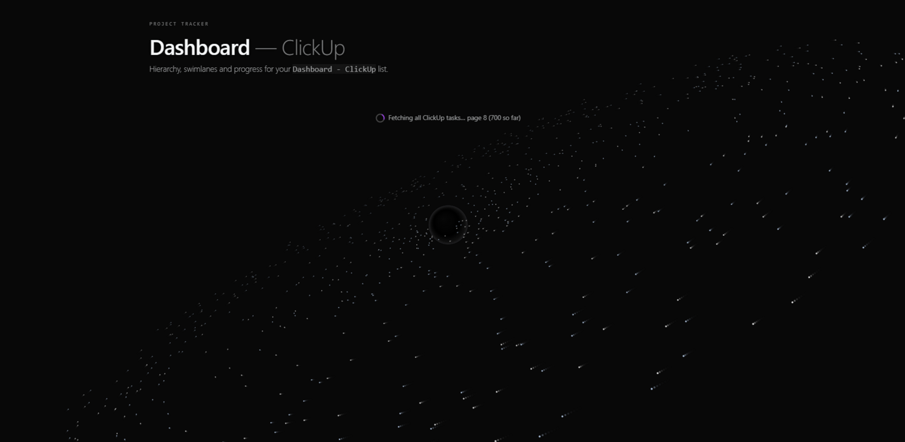
Click to enlarge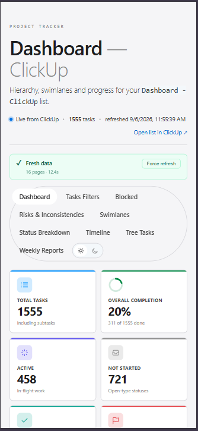
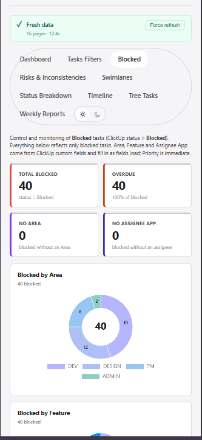
Click to enlargeOnce the dashboard was mostly finished, I tested it on a phone and found the interface wasn’t 100% suited to mobile use.
Since the initial prompts had focused mainly on the desktop experience (don’t make my mistake: always build with mobile-first in mind), I went back to the prompt-building process and wrote more technical instructions demanding a mobile-first approach.
The application was then reworked so that components, layouts and visual structures adapted to smaller screens. That produced several additional design changes, which would probably have been avoided if mobile-first had been set explicitly as a requirement from the start.
That was another practical lesson in AI-assisted development: important requirements need to be stated explicitly in the initial spec. Asking an AI to build a dashboard is not the same as asking it to build a dashboard that follows mobile-first principles.
I got this design/style for headings, body, fonts and so on from https://styles.refero.design/, which is free and generally lets you put a nice style into your app.
Once the dashboard was already showing the project information automatically from ClickUp, the next problem became communication. Talking about the volunteer project now: not everyone involved would have access to the dashboard, partly because access is controlled according to the project’s rules.
Even so, it was useful to distribute selected information to the wider team: KPI-style indicators, task counts, overdue tasks, blocked tasks, completed work, individual workloads and other project-management indicators.
That led to the creation of the Weekly Reports module.
The conceptual shift was moving from asking only “how is the project doing?” to also asking “how can the project’s current state be communicated to the people who need that information?”.
The first version of Weekly Reports I came up with introduced a Report Configuration Filter area. The goal was to create reusable filters that could be used later to generate reports without rebuilding the same criteria every time.
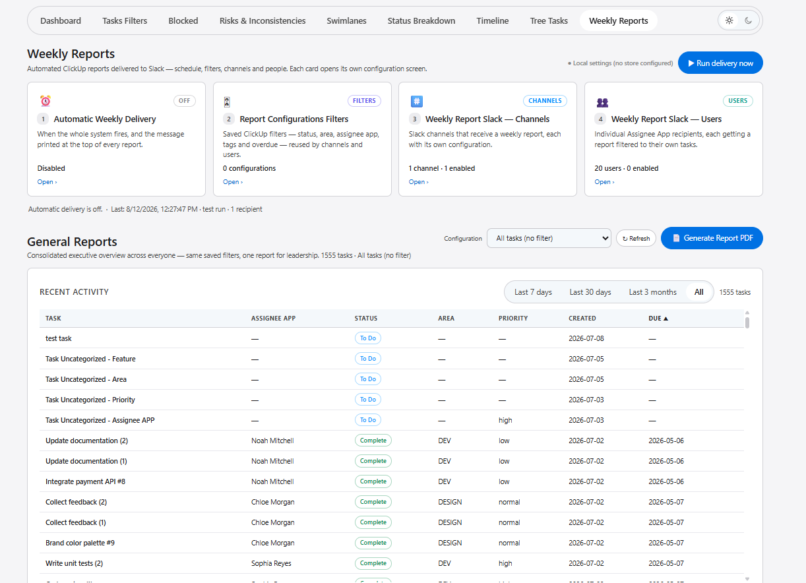
Open the Weekly Reports tab ↗The filters can represent an area, a person, a status, an overdue condition or other combinations of criteria. Some examples: a filter containing only active Development tasks, active Design tasks, Project Management tasks, one specific person’s tasks, or tasks matching a status condition.
The saved filter works as a reusable repository of criteria. Once the filter exists, the report can be generated from it as many times as needed.
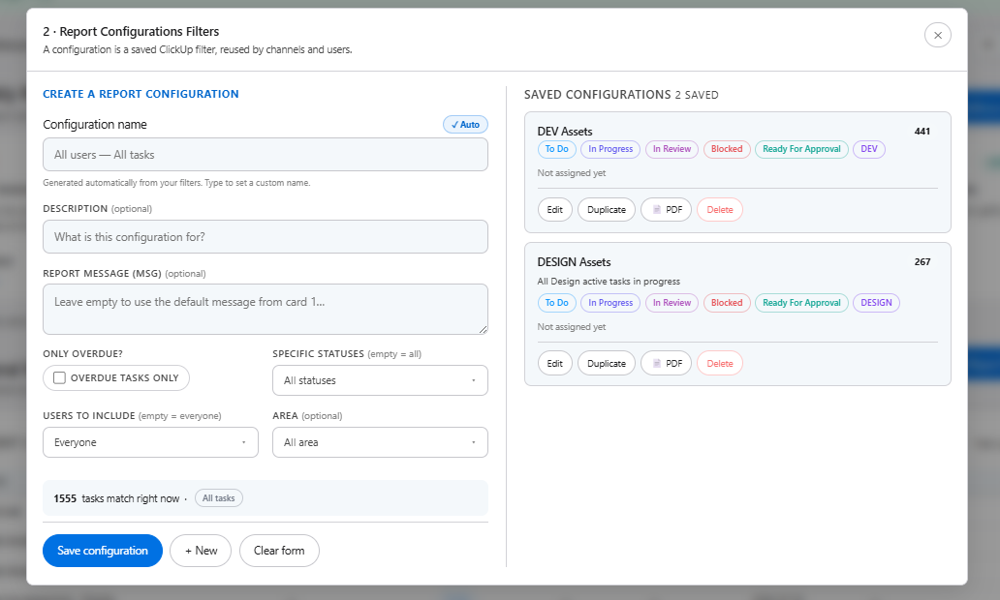
Open the Weekly Reports tab ↗The first implementations were more manual. I could specify a person and generate a report for them. Another version let me pick a department or area, like Development, and generate that team’s report.
Functional as it was, that process was still very manual and required repeated human interaction.
The next step was connecting the reporting system to Slack. The volunteer project also uses Slack as its communication platform, including channels for the teams — hence Slack. I went to look into the integration available in Claude and, to my delight, Claude has an API connection to Slack.
That made it possible to create two report destinations:
For an individual user, the report could include the tasks that person was working on, overdue tasks, completed tasks and other relevant information. For a channel, the report could summarise the work of an entire team, like Development or Design.
The configuration let me pick the destination, pick a previously saved report filter and generate the report. The generated PDF could then be sent to Slack.
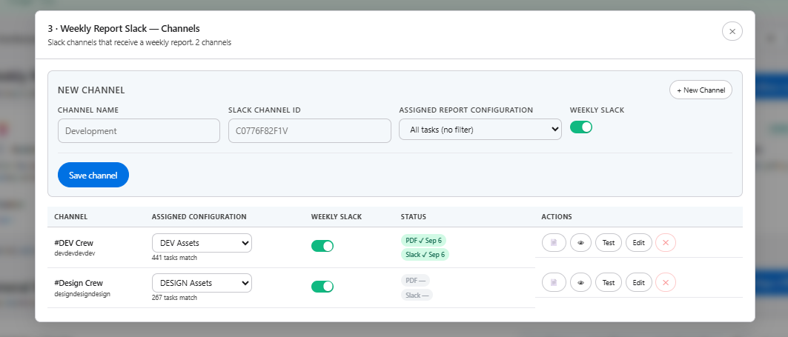
Open the Weekly Reports tab ↗A Test button was used at first to trigger the operation manually. The system generated the report and sent it to the configured Slack user or channel.
However, with roughly 10 to 12 users and several channels, manual sending became impractical. I’d have to open the dashboard, go to Weekly Reports and trigger the operation over and over, for every recipient. That became the next bottleneck, and we’ll see the solution in items 15, 16, 17 and 18.
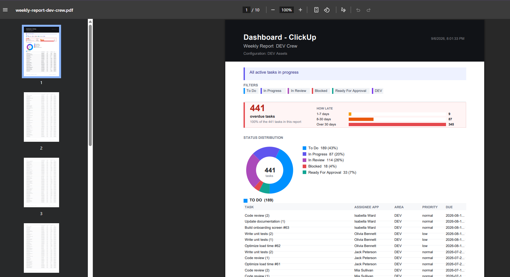
Click to enlargeTalking about the volunteer project first: I had a gap. The moment automation became the next goal, another limitation became clear — the dashboard still lived inside the Claude/Artifact environment. To create an application other people could reach through a normal web link, and one capable of supporting independent services, it had to move to a conventional web-application structure.
So I started researching a way to move the project out of the Artifact and into a repository, and publish it on the web. I already had GitHub in mind as the code repository and, through my research, largely with AI’s help, I started setting up and testing Vercel as the deployment and hosting platform.
Here we go: I created a GitHub account and repository. Claude helped with the process of moving the project files from the local environment into the repository. Even though I’d worked with GitHub before, the AI-assisted process helped me remember the workflow and the commands I needed.
The repository gives version control and support for branches, for the main branch, for commits, pushes and merges. That brought a more conventional software-development flow to the project.
Then I created a Vercel account and configured deployment from the GitHub repository. Vercel provides the publishing and the domain/URL the web application can be reached through. And yes, for free.
The conceptual deployment flow ended up like this:
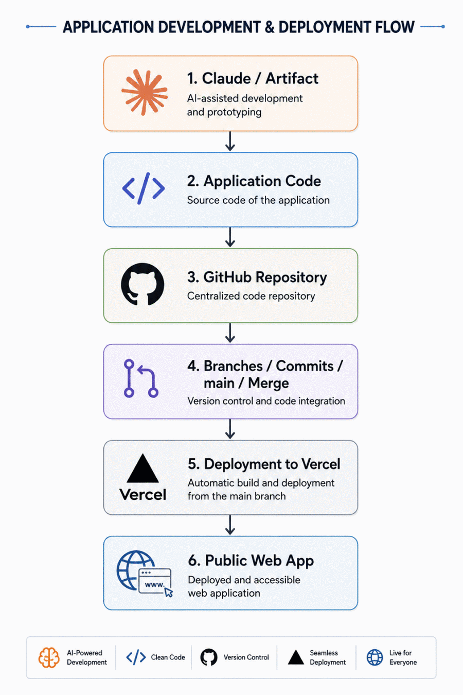
Click to enlargeThe Artifact is still useful as a prototyping environment. But now I can keep using Claude to modify and program the application, while the resulting project gets pushed to GitHub and published by Vercel. And AI does a good chunk of that for us.
The project itself is essentially a web application built around an HTML interface, plus the code and supporting services the dashboard needs to work.
Moving the dashboard from the Artifact to a public Web App wasn’t just a deployment decision. It also widened the architecture that was possible.
Once the application existed independently on the web, it could support additional services and flows without requiring the user to stay inside Claude/Artifact.
That was particularly important for Weekly Reports, because automated processes need an externally reachable endpoint that a scheduler can call.
The Web App became, then, the bridge between the interactive dashboard and the automated reporting infrastructure.
My goal became eliminating the human action needed to trigger each report.
The project was being developed mostly on free services — after all, it’s a volunteer project with no cash, with the exception of my paid Claude subscription. So the automation architecture was designed around free components.
I looked into using a scheduled-check service, commonly implemented through a Cron Job. The approach I picked uses a third-party scheduling service that makes periodic HTTP/HTTPS requests to an application endpoint.
The idea was to replace the manual Test button with a service that periodically checked whether a report needed to be generated and sent.
So I set up a Cron Job to call the Weekly Report endpoint roughly every ten minutes. The endpoint checks whether there’s a report that should be sent. If it’s already been sent, it doesn’t send it again. If it hasn’t and the configured conditions are met, the application generates the report and sends it to Slack.
The Cron Job acts, then, as a periodic trigger — a “wake up” mechanism. It doesn’t define the business schedule by itself. The business rules live in the application’s Automatic Weekly Delivery configuration, which I explain shortly.
The Weekly Report Slack Users area was extended with an activation control called Weekly Slack. It lets me decide whether a specific user should receive automatic reports.
For each user, the configuration includes the appropriate destination information, like the e-mail or the Slack identifier, along with the reusable report filter.
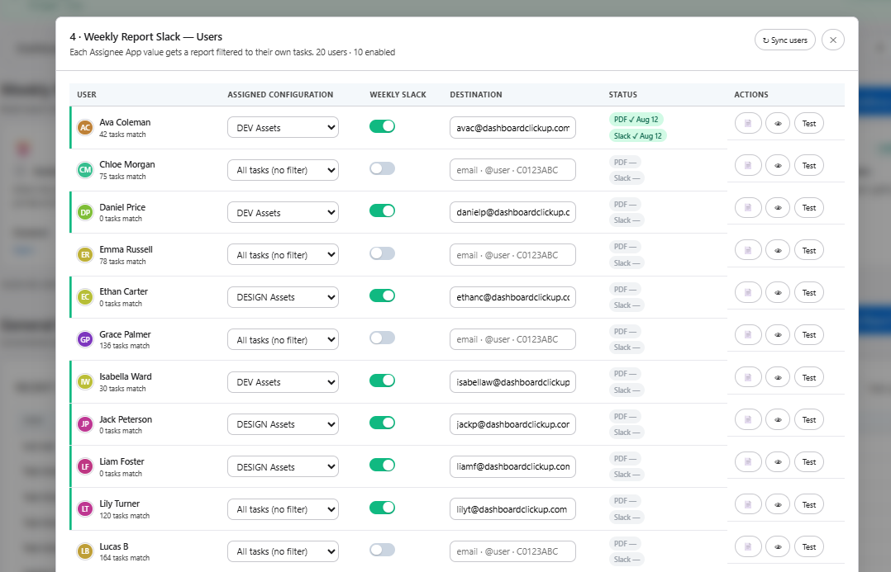
Open the Weekly Reports tab ↗The Weekly Report Slack Channels area was implemented in a similar way, but it uses the Slack channel name and ID. Each channel can be configured with its own filter and its own activation state.
That means each user or channel can be configured independently as an automatic recipient, or left inactive.
So the application separates three concepts: which data should be included (the filter), where it should be delivered (user or channel) and whether that destination is active for automatic delivery.
The last big configuration layer is the Automatic Weekly Delivery module.
My goal with this module is to define when the reports should actually be sent. Without that layer, the Cron Job would keep calling the endpoint, but there’d be no controlled schedule for delivery.
The configuration lets you enable or disable automatic delivery and define:
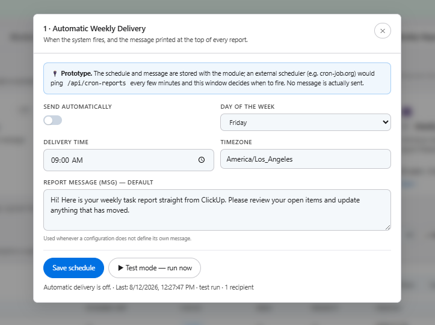
Open the Weekly Reports tab ↗For example, a configuration can say the report should be sent every Friday at 9:00 in the selected timezone.
The Cron Job can keep calling the endpoint every ten minutes all week long. The application compares the current date and time with the Automatic Weekly Delivery configuration. From Saturday to Thursday the conditions don’t match, so nothing is sent. When Friday 9:00 comes around and the parameters line up, the application goes ahead with generating the report and delivering it to Slack.
That separation lets you use a simple, recurring external scheduler while keeping the business logic inside the application.
An important architectural principle I wanted to implement is that the Cron Job is not the business scheduler by itself. It only invokes the application periodically. It’s the application that decides whether the configured schedule matches, whether the destination is active, which filter should be used and whether the report has already been sent.
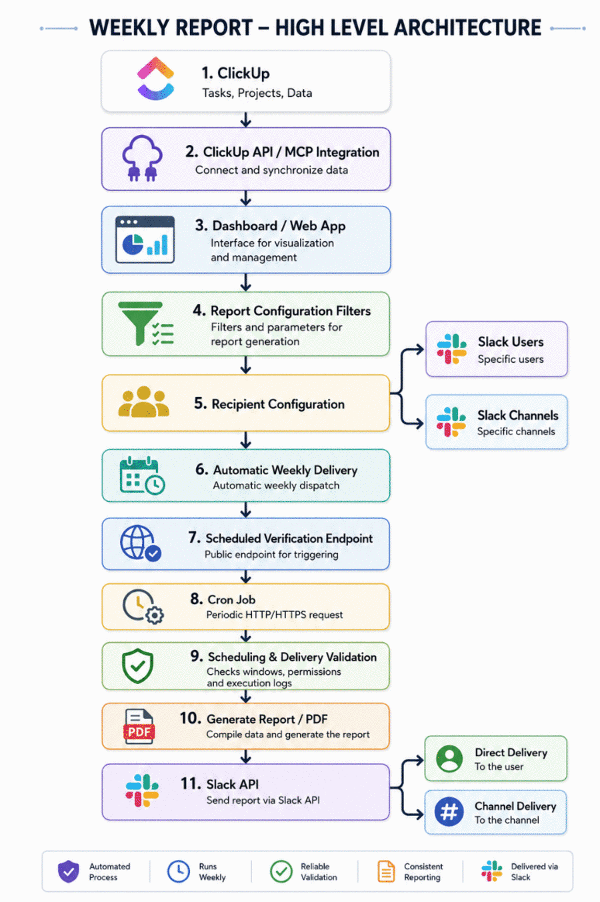
Click to enlargeSince the volunteer project has access control, I built a login-and-password control. For that I had to study implementing a database with encryption and all the necessary security. While researching deployment on Vercel, I found a free database option and implemented that database to store user logins and passwords, leaving it available to hold other important data in the future if we want. I’ll say a bit more about that later. But worth remembering: this project here, being public and having no user control, didn’t implement that part. Maybe I’ll do it in the future.
The exact database model, the entities stored, the configuration records, the delivery history, schedule persistence and the duplicate-prevention logic haven’t been described in enough technical detail yet, and should be documented in a future revision.
That layer is expected to be particularly relevant for configuration information, like reusable report filters, Slack destinations, activation flags, schedules, messages and, possibly, delivery state.
The project was developed as an iterative experiment, not as a traditional software project that starts with a complete technical spec.
I’d generally start with a business or project-management problem, describe that problem naturally, use an AI to structure the idea, hand the resulting prompt to another AI — Claude/Artifact, in this case — review the result, spot gaps and repeat the cycle.
The flow deliberately separates ideation from execution. Brainstorming and prompt building can happen in ChatGPT, Gemini, Manus or another AI, while Claude/Artifact stays focused on executing the technical instructions and modifying the application. Requirements team and Dev team.
That also gives you a practical method for managing AI usage limits and keeping the main development conversation cleaner.
My experience in project management and software implementation shapes the business logic and the reporting requirements, while the AI tools speed up translating those requirements into prototypes and working components.
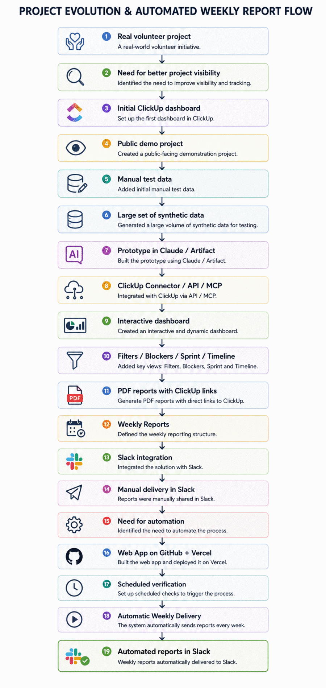
Click to enlargeBased on everything documented so far, the ClickUp Project Tracker was conceived to work as an external reporting and project-visibility layer on top of ClickUp.
ClickUp remains the source of the tasks and metadata. The Web App retrieves and organises that information, turns it into dashboards and reports, and offers additional filtering and distribution capabilities that are useful for project management.
The system isn’t meant to replace ClickUp as the primary task-management system. It complements ClickUp, improving visibility, analysis, reporting, export and communication.
The main functional areas identified so far are:
Several lessons came out of the building process naturally.
The project started with a practical reporting problem, in a real volunteer project. The technology was chosen and adapted as the problem got clearer.
The ClickUp connection was tested first with simple questions — task counts and available fields — before the dashboard was built.
Using an AI assistant to shape the prompts before sending them to the development environment helps organise complex ideas, cuts unnecessary iterations inside the Artifact and keeps the execution context cleaner.
The mobile experience showed that requirements like mobile-first design need to be stated explicitly from the start, rather than assumed.
Once the dashboard was working, the next problem was distributing selected information to people who might not have access to it. That led to Weekly Reports and the Slack integration.
A recurring Cron Job on its own doesn’t make a complete automation solution. The application also needs business rules, recipient configuration, schedules, state management and duplicate prevention.
The project started as an Artifact, but ended up becoming a web application under version control, published via GitHub and Vercel, with external integrations and a database layer.
The ClickUp Project Tracker started as a practical solution to a reporting limitation in a real volunteer project. The initial need was simple: get more useful visibility into the ClickUp data without needing a paid plan.
The solution grew from a dashboard prototype into a broader reporting and communication system. AI-assisted prototyping made it possible to experiment quickly with interfaces and requirements. ClickUp provided the source data, and the dashboard turned that data into visual information, filters, reports and PDF exports.
Introducing Slack changed the system’s role: from a dashboard people had to visit, to a mechanism capable of distributing information to users and channels. Introducing GitHub and Vercel separated the application from the Artifact environment and made it possible to run it as an independent Web App. Finally, the concepts of scheduled checking and Automatic Weekly Delivery laid the foundation for automated, recurring reports.
The project represents, then, more than a dashboard. It’s an evolving demonstration of how AI-assisted development, project-management knowledge, external APIs, version control, web publishing, database services, scheduled jobs and communication integrations can be combined to create a lightweight reporting and visibility platform around an existing project-management system.
This version should be treated as the baseline of the project’s documentation. Future revisions can preserve this narrative and add the exact technical architecture, implementation details, screenshots, diagrams, API information, the database schema, the security model, deployment procedures and operating instructions.
I needed a realistic volume of data, and “realistic” here doesn’t just mean “a lot of rows”. It means a distribution that would make the dashboard actually work: tasks spread across the seven statuses, the four areas, the ten features, the nineteen assignees, with varied priorities, due dates in the past and in the future (to generate overdue items), and a real hierarchy of parent → subtask → subtask of the subtask.
Creating that by hand is out of the question. Creating it by “asking the AI to create the tasks” doesn’t really work either: the AI needs an execution path — the ClickUp API, in this case. And it was Claude AI itself that flagged this and taught me about it. (Aaah, I love AI.)
The method has three clearly separated layers, and that separation is what makes the thing work:
This is the part that’s genuinely hard work, and it’s worth recording because anyone repeating this will trip over the same things:
Creating a task is POST /api/v2/list/{list_id}/task, authenticated with a personal token in the Authorization header. So far, so easy.
Statuses have to match exactly. The API returns and expects statuses in lowercase: to do, in progress, ready for approval. Sending To Do with capitals gets rejected or ignored. (Fun detail: that same behaviour would come back to haunt me days later, in a dashboard bug.)
Custom fields of type labels don’t accept text. The three fields I use — Area, Feature and Assignee App — are multi-select, and the API doesn’t accept the written label, it demands the option’s UUID. So before creating any task you have to fetch the definitions with GET /api/v2/list/{list_id}/field and build a label → UUID dictionary. Without that, the tasks get created “clean”, with no area and no assignee, which is exactly the kind of error that only shows up later, when the dashboard displays everything as “No Area”. (and again, I figured this out in practice, studying and with Claude AI’s help)
Subtasks need two passes. A subtask is created with the parent field pointing at the parent task’s ID, and that ID only exists after the parent has been created. So the flow is: create the parents, keep the returned IDs, and only then create the children referencing those IDs. For the third level, repeat the process using the children’s IDs. (but the AI prepares all of that for you and leaves it ready in the script — you just have to remember this detail and mention it in your prompts)
There’s a request limit. The free plan works in the range of 100 requests per minute. Creating more than a thousand tasks means at least a thousand requests, so the script needs pauses between calls and handling for the 429 response (rate limit exceeded), with a retry. Without that the process dies halfway through, and you end up with half the tasks created, the worst possible state. (I only understood this part because I stopped to read what Claude AI explained to me, since it was adding those intervals on its own — the credit here goes to it, for getting ahead of the work)
Here’s the part nobody puts in the documentation, but which is the most useful:
Creation is not idempotent. Running the script twice creates everything twice. There’s no “create if it doesn’t exist” (at least not in the script I put together). So when something went wrong halfway, the cleanest way out was to delete everything and start over, rather than trying to fix a mixed state (in my case I figured trying to fix it would be more trouble than deleting and redoing, given that I was creating everything from scratch and it was all test data anyway. But if you actually need to fix things, you’d have to work the script harder for that — the AI will definitely help you with it).
Bulk deletion also goes through the API. It’s DELETE /api/v2/task/{task_id}, one at a time, with the same request limit. Deleting a thousand tasks costs almost as much as creating them.
The update round. At least once I needed not to recreate but to update the existing tasks — for example, to fill in a field that had come out empty or to fix a distribution. That’s PUT /api/v2/task/{task_id} for the native fields, and a specific endpoint for custom fields: POST /api/v2/task/{task_id}/field/{field_id}. The script for that is different from the creation one: it first lists the existing tasks (GET /api/v2/list/{list_id}/task, paginated 100 at a time), decides what to change and then fires the updates.
Here’s what ended up live, and what the dashboard consumes today:
And yes: every person’s name in that data is fictional. If you find yours, it’s a coincidence. ( ;
Built with a lot of love and AI by Lucas B ( ;